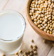
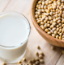

12+
Ingridients
 cooking spray
cooking spray- 1/2 cup whole milk
 2 large eggs1 tablespoon maple syrup
2 large eggs1 tablespoon maple syrup 1/2 teaspoon vanilla extract
1/2 teaspoon vanilla extract- 1 pinch salt
 4 pieces 1/2-inch thick pieces brioche
4 pieces 1/2-inch thick pieces brioche
How to cook
- Heat a Belgian waffle iron.
- Mix the flour, sugar, and baking powder together in a mixing bowl. Stir in 1 cup eggnog, butter, and the egg until well blended. Add more eggnog if needed to make a pourable batter.
- Lightly grease or spray the waffle iron with non-stick cooking spray. Pour some batter onto the preheated waffle iron, close the top, and cook until golden brown and crisp on both sides. Waffles are usually cooked with steam subsides. Transfer waffles to a serving plate, and keep warm.
- Meanwhile, place the raspberry preserves in a pan, and heat over medium heat until pourable.
- To serve, drizzle raspberry preserves over each waffle, and top with raspberries. If desired, add a dollop of whipped cream to each waffle.
Additional Information
- Serving Time (±)
- 12 mins
- Nutrition Facts
- 222 calories
- 6.2 g fat
- 7.2 g carbohydrates
- 28.6 g protein
- 68 mg cholesterol
- 268 mg sodium
- Tags
- Sweet, Coconut, Quick, Easy, Homemade